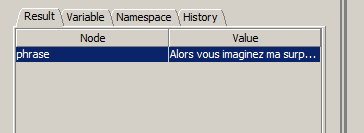

Mise à jour de l'instance XML :
Erreur détéctée : The content of element type "info_traitements" must match "(but,mise_en_forme_par,email,date)".
Diagnostic : Créateurs, n° de Binome et date erronés, email manquant. (Element But correct).
Traitement :
<info_traitements>
<but>Traitement d'un texte franco/tchèque avec XPath / XSLT / XQuery</but>
<mise_en_forme_par>
<unCreateur>Maria Baboulall</unCreateur>
<unCreateur>Yassine Moreno</unCreateur>
<NoBinome>B3150</NoBinome>
</mise_en_forme_par>
<email>slifer.unit@gmail.com</email>
<date>14/05/2014</date>
</info_traitements>
L'ordre des elements étant important.
Expression XPATH :
1. Selectionner les auteurs de la mise en forme :
//unCreateur
On utilise le chemin relatif (descendant-or-self)
2. Les paragraphes de dialogue :
//paragraphe[@type='dialogue']
Utilisation de prédicats
3. Les phrases en français
//phrase[@langue='francais']

4. La deuxième phrase de chaque paragraphe
//phrase[position()=2]

5. La dixième phrase du texte
(//phrase)[10]
On aplatit le chemin pour faire sortir "phrase" de son contexte. (utilisation de parenthèses)

6. Les phrases contenant le mot "mouton"
//phrase[contains(string(.),'mouton')]
Utilisation de la fonction string() pour extraire le texte du noeud et le comparer à "mouton"

Mise en
forme du corpus Le Petit Prince [XSLT]